One Person Unicorn · Reichman University · built with AI by Mia, Yam, Mei & Ido
WISP · incoming call
Tough Love
“Out of bed. Now.”
Name + Logo · Part 1 · owner Ido
The brand is WISP.
We Don't Remind You. We Move You.
We chose to complete this part only after settling on our marketing strategy: first we chose what and who we are, and only after that we chose what we'll be called. The name came from Gemini; the mark from Adobe Firefly, then simplified in Gemini with the wordmark added. The working name through development was NaaS (Nudge as a Service); the final brand is WISP, and it carries across the deck, the ad, the posts and every asset here.
Why WISP?“A wisp applies beautifully to both of your elemental metaphors. A ‘wisp of wind’ is the exact amount of air needed to catch a sail, and a ‘will-o'-the-wisp’ is a guiding spark of light in the forest. It provides gentle momentum without ever taking control.”
Two names we turned down.
Trellis
“Trellis” was rejected as a trellis is a rigid tool which puts a plant in place and forces it to grow a certain way, a philosophy we did not like, as our tool should help you be the best you, not what the someone else forces you to be.
Zephyr
“Zephyr” was rejected as the name sounds sharp and unwelcoming plus being a name for wind most people might not understand.
Seven that didn't make it.
We explored three named directions in Firefly, then combined The Adaptable Familiar with features of The Ethereal Spark: the wind in the sails and the ember to the fire. These are the marks that lost.
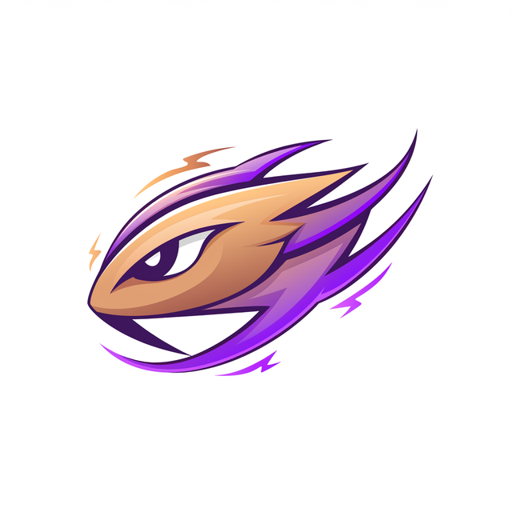
Adobe FireflyDirection 1 · The Adaptable Familiar
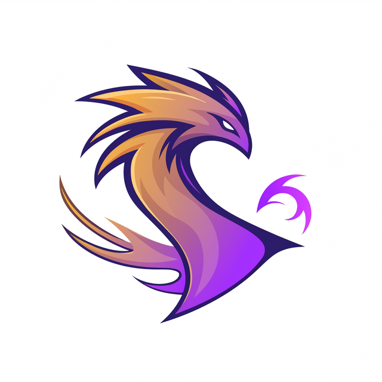
Adobe FireflyDirection 1 · The Adaptable FamiliarAdobe FireflyDirection 3 · The Sleek & Modern Abstract MarkAdobe FireflyDirection 3 · The Sleek & Modern Abstract MarkAdobe FireflyDirection 2 · The Ethereal SparkGeminiThe combined mark, before the wordmarkGeminiSame mark, with sparkles added
People don't lack goals. They lack accountability.
80%
of students procrastinate
Research ties it to guilt, anxiety, stress and poorer academic and health outcomes.
4.19%
push-notification open rate
The other 95.81% is where goals quietly go to die.
Personal commitments are easy to postpone. Passive reminders are designed to be ignored.
The 80% figure: an estimated 80–95% of college students procrastinate, per published research summarised at solvingprocrastination.com.
Market & Competition · Part 3 · owner Mei
A massive market ready for a more human solution.
$13.15B
Global productivity apps market (2025)
$30.85B
Projected by 2034
9.94%
CAGR
Others track behavior. We interrupt inaction.
Player
Approach
Type
Habitica
Gamifies tasks with RPG-style rewards
Passive
Beeminder
Penalizes missed commitments with financial stakes
Passive
Fabulous
Builds routines through app-based guidance
Passive
WISP
High-friction, active voice intervention
Active
Our differentiator is specific: personalized AI phone calls that interrupt procrastination in the moment, adapting to distinct psychological personas rather than offering a one-size-fits-all reminder. We turn passive tracking into a real conversation.
Part 3 · Market & Competitor Analysis · owner Mei. Every number above is quoted from a source we can point to.
The Solution
Accountability that actually calls you.
01
Set Goal
You tell WISP what matters and when.
02
AI Call
An automated, personalized voice call, not another banner to swipe.
03
Take Action
A real conversation that gets you moving, in the moment.
04
Report
Progress tracked, so the assistant adapts to your goal, schedule and personality.
The Personas
The right push for every personality.
Choose your assistant at onboarding. Same mission, four completely different ways of getting you there.
“Hey loser, you promised you'd get up and run. Out of bed. Now.”
Blunt, provocative commands with zero cushioning: confrontational, but never cruel enough to erode trust.
“It is 6:30 AM. Your scheduled workout window is now open. Let's get to work.”
Calm, objective, all business: time and fact stated with no filler, like a sharp COO reading the schedule.
“I know you're tired, but remember how good you'll feel after you finish this.”
Empathetic and warm, but the comfort always resolves into a direct ask. It never replaces the call to action.
“Hey champ! Your time to shine is right now. Go out there and crush it!”
A high-energy hype machine: praise that's earned and tied to the real stakes of the task.
The four personas are defined in the team's product brief (compiled from the team's own working notes). The pitch deck features two of them, Tough Love and Ego Pumper.
Marketing & Content Strategy · Part 2 · owner Mia
A plan a founder could run on Monday.
Target audience, brand voice, and a one-month content calendar with real copy, not placeholders.
Who we're for
Students and young professionals who struggle with procrastination. Two segments we write to:
The Unbossed Hustler: freelancers and solo founders whose isolation is quietly killing their output.
The Procrastinating Student: the Crisis Crammer and the Repeat Quitter, met with the right persona instead of another silent miss.
Brand voice
WISP is a tough, devoted Executive Assistant. The user is the Boss. Not nagging, not micromanaging, not petty. “We've got your back.”
Always: “Right now.” · “I've got you.” · “You said this mattered.” · “Let's go.”
Never: “Just a friendly reminder…” · “Whenever you get a chance…” · “Sorry to bother you…”
Decisive, present tense, active voice.
The marketing brief
The core hook · the enemy
The Enemy is the Passive Notification: the swipe-away banner with a 4.19% open rate that quietly gives users permission to ignore their own goals.
“95.81% of the time, your phone lets you off the hook. We don't.”
Positioning statement
NaaS is the AI Executive Assistant that replaces the ignorable push notification with a live voice call, because procrastination was never a discipline problem: it was an interruption problem that text could never solve. We turn “I'll do it later” into “I'm doing it now,” one uncompromising phone call at a time.
Pillar 1
The Case Against Passive. The data and psychology behind why text nudges and gamified checklists fail. Builds trust through evidence.
Pillar 2
Meet Your Assistant. Real call teasers across the 4 Nudging Styles. Builds demand through personality and curiosity.
Pillar 3
Executed, Not Excused. Real use-case stories from Unbossed Hustlers and Procrastinating Students. Builds trust through social proof.
March 2026 · illustrative launch month · twelve posts, real copy, click a day
The Case Against PassiveMeet Your AssistantExecuted, Not Excused
MonTueWedThuFriSatSun
The posts use the working name “NaaS”; the final brand is WISP. Kept verbatim here, faithful to the team's copy. Unifying the name across the posts is a pending team decision.
The Ad · Part 4 · 60 seconds, made with AI · owner Yam
The phone rings instead of buzzing.
Every January she writes three resolutions. Every February, they die. This year, instead of a ping, the phone rings.
The 60-second script, as shot
The cut we shot. Narrator total: 44 words. Every call line 12 words or fewer. Written in a five-agent writers' room (comedy, brand voice, rhythm, heart) with a creative-director judge assembling the final cut; the shot-by-shot iterations are in the prompt log.
00:00–00:06 · Hook, midnight. NYE fireworks through the window. She types the list: Run a 10K. Finish the portfolio. Save $5K.SUPER: “Jan 1. 00:03.” Narrator: “That's my boss. Every January, three promises. Same three.”
00:06–00:14 · The graveyard. Shoes in the box. Lockscreen stack: “Just a friendly reminder: Gym today 💪” and “Whenever you get a chance: Portfolio ✨”, swiped away, again, again. Narrator: “Every year, she sets reminders to do the things. And here she is again, doing nothing.”
00:14–00:20 · The turn. Hard cut to black. SUPER: “Not this year.” 5:59 AM, dark bedroom. Narrator: “So this year, she doesn't get a ping. She gets me.” The phone rings on the beat, right on “me.”
00:20–00:26 · Ego Pumper, 6:30 AM.Phone: “Morning, champ! Ten thousand meters just woke up terrified. Let's go.” She laces the shoes.
00:26–00:32 · Pragmatist, 13:00.Phone (dry): “Hi hun. Enough with the scrolling. Let's get the portfolio done.” Laptop opens.
00:32–00:38 · Tough Love, 21:00. Snack bag crinkles. Ring on the beat. Phone: “I heard the bag. You said this mattered. Put it down.” She puts it down.
00:38–00:45 · Supportive Partner, 22:30. The one straight beat, no joke. Phone (soft): “Almost there. Ten more minutes, then rest. I've got you.”
00:45–00:55 · Payoff, NYE one year later. Same couch, same friend. Last year's list: ✓ ✓ ✓. Friend: “Okay, HOW?!” Narrator: “Four hundred calls. She hung up on me twice. I called back.” Her phone rings in her hand. Her: “You'll see.”
00:55–01:00 · End card. Logo and name. On screen: “Choose who calls you.” plus the four persona glyphs. Narrator: “We've got your back.”
Tools: Higgsfield running Google Veo modules (Cinema Studio for the shots, Nano Banana Pro for keyframes, Seed Audio for the persona voices), ElevenLabs for original voice, Claude Code directing the edit, ffmpeg for the cut. No real person's voice was cloned.
Pitch Deck · Part 5 · built with Gamma · owner Mei
The full nine-slide story.
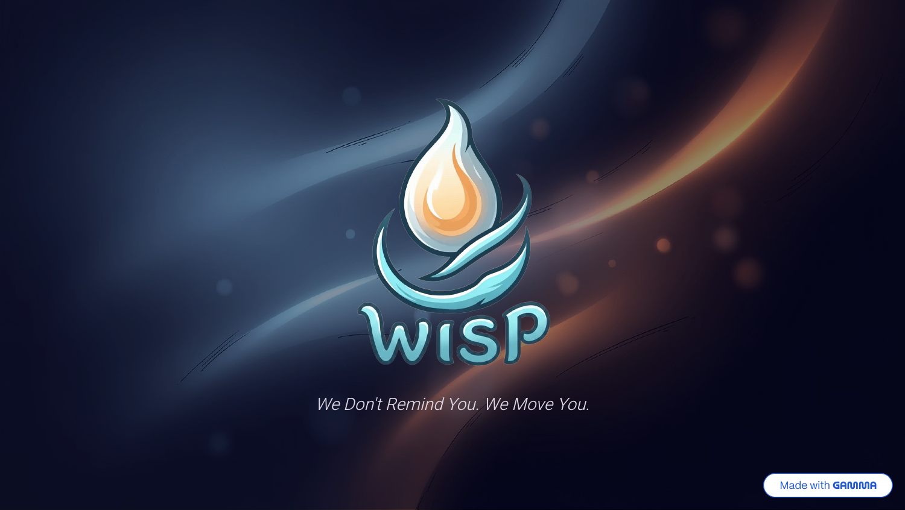
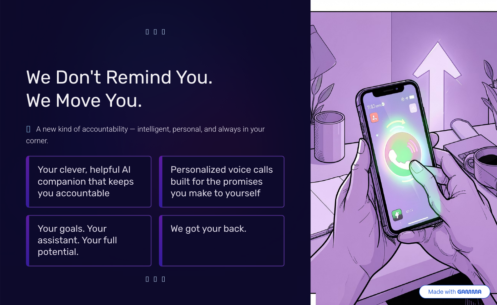
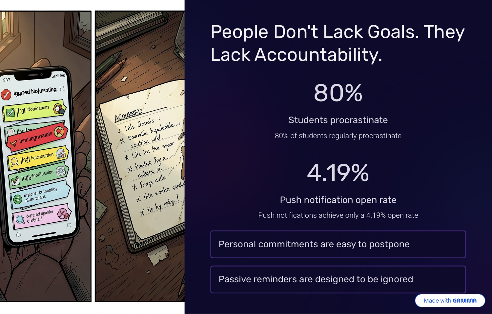
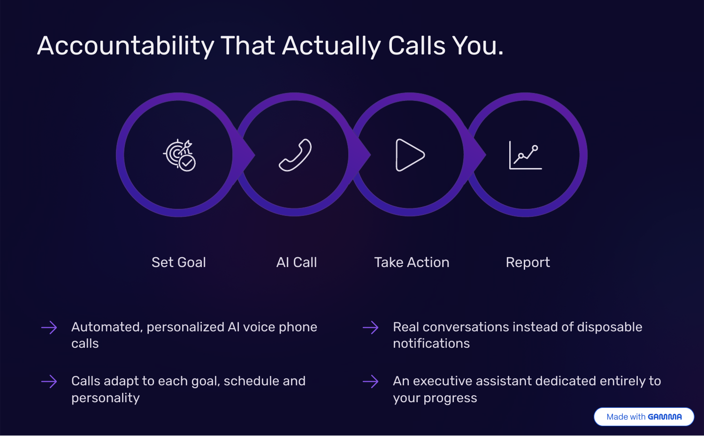
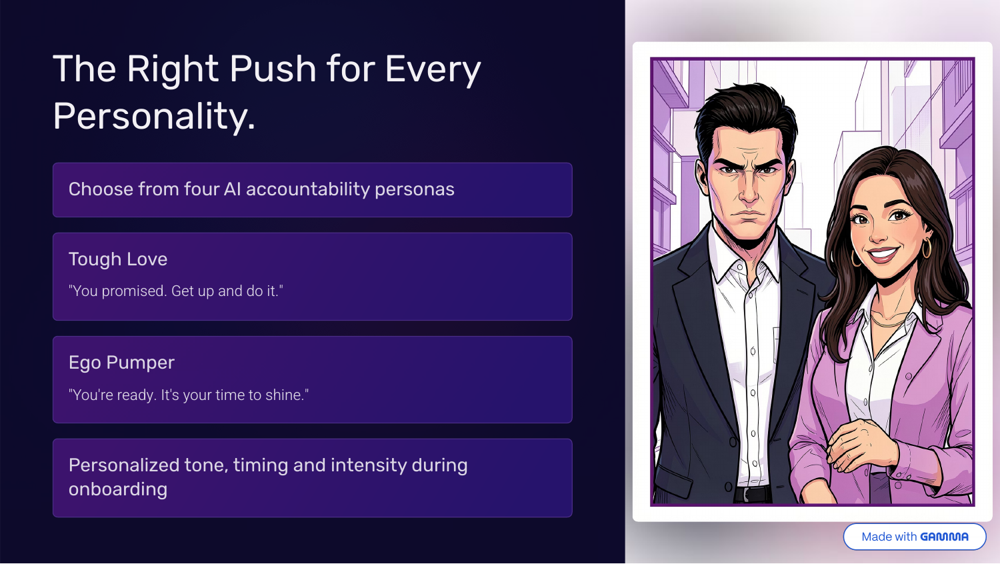
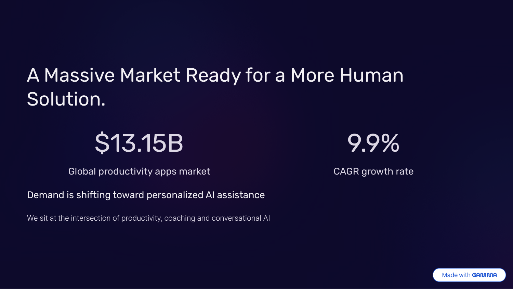
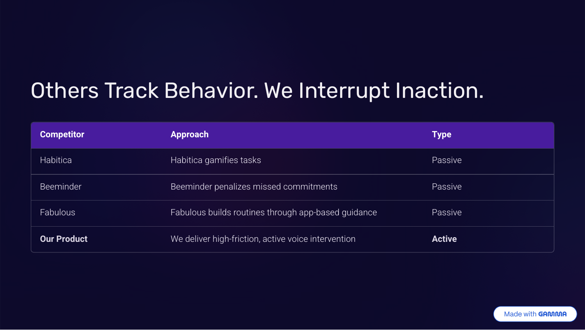
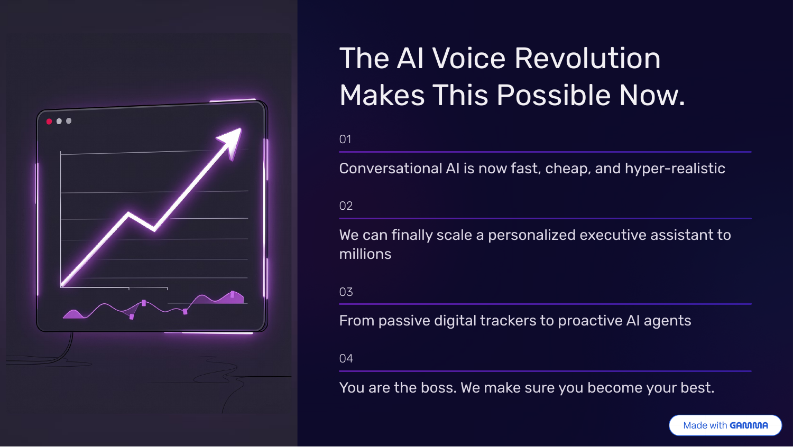
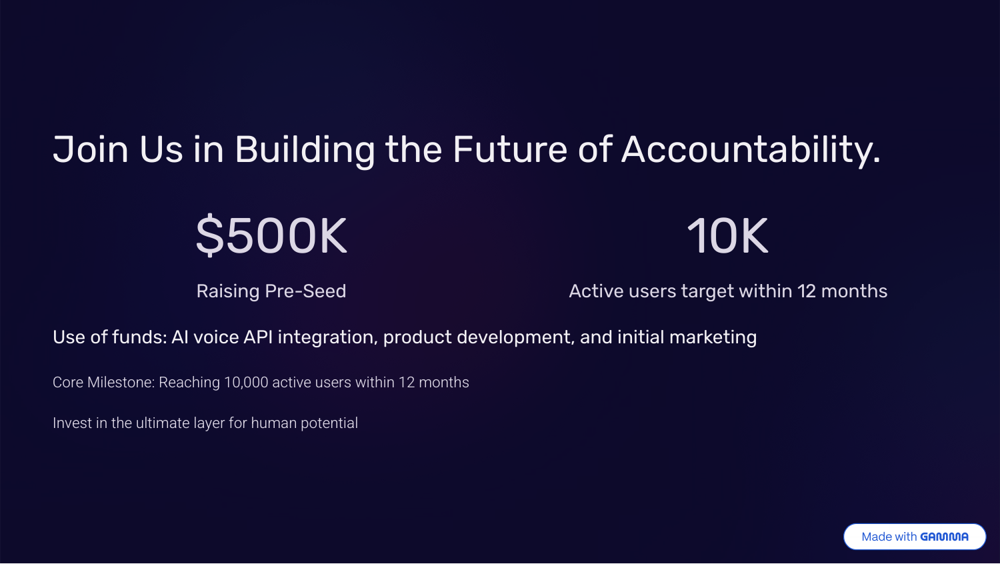
The slide outline Mei wrote
Mei's eight-slide outline, which she prompted Gamma to build. The exported deck adds a logo cover in front, so the carousel above runs to nine.
Slide 1 · Title & Hook. Wisp: We Don't Remind You. We Move You. Introducing our AI companion.
Slide 2 · Problem. People lack accountability, not goals. 80% of students procrastinate, and passive push notifications have an abysmal 4.19% open rate.
Slide 3 · Solution. Accountability that actually calls you. Automated, personalized AI voice phone calls replacing disposable notifications.
Slide 4 · Product. The right push for every personality. Choosing from AI accountability personas (e.g., “Tough Love” vs. “Ego Pumper”).
Slide 5 · Market. A massive $13.15B global productivity apps market shifting toward personalized AI assistance.
Slide 6 · Competition. Others track behavior, we interrupt inaction. High-friction, active voice intervention vs. passive tracking (Habitica, Beeminder, Fabulous).
Slide 7 · Why Now. The AI Voice Revolution. Conversational AI is now fast, cheap, and hyper-realistic, allowing us to scale.
Slide 8 · Ask. Raising $500K Pre-Seed. Use of funds targeted at API integration and marketing to reach 10K active users within 12 months.
Conversational AI is finally fast, cheap and hyper-realistic, so a personalized executive assistant can now scale to millions. From passive digital trackers to proactive AI agents.
$500K
Raising pre-seed
10K
Active users target within 12 months
Use of funds: AI voice API integration, product development, and initial marketing.
Behind the Build
How We Built It · 4+ tools, each where it fits
One company. Four people. Every step with AI.
The grade rewards which AI tools you chose and why. We used nine distinct ones, each where it's strongest, across the team.
Claude · Claude Code
Yam · video
Orchestration, a multi-agent research team, storyboarding and prompt engineering, driving the whole edit.
Claude Cowork
Mia · Part 8
A reusable company skill wired to WISP's brand and process.
Higgsfield
Yam · video
Cinema Studio (video), Nano Banana Pro (keyframes), Seed Audio (generated persona voices).
ElevenLabs
Yam · stretch
Original AI voices: the Day-1 welcome call and the founder's word in the onboarding.
Gamma
Mei · deck
The nine-slide pitch deck, built with AI.
Perplexity
Mei · market
Sourced market and competitor research with links we can point to.
ChatGPT
Mei
Drafting and analysis alongside the research.
Gemini
Ido · name · team
Choosing the name WISP, then simplifying the final mark and adding the wordmark. Also research, and turning the team's WhatsApp thread into the working product brief.
Adobe Firefly
Ido · logo
The main logo, across three explored directions: the Adaptable Familiar, the Ethereal Spark and the Sleek & Modern Abstract Mark.
Supporting craft, not counted as AI tools: ffmpeg and ImageMagick for the edit and pixel-level compositing, Mixkit for free-license music and sound effects.
Prompt Log & Evidence · one per deliverable
Every part shows its work.
Every deliverable has its own proof: a shared chat or a screen recording, and the prompt journeys with their corrections. Each of us attaches the log for our own section.
Reflection is personal. Each of us writes our own.
What we tried, what didn't work, what we chose and why, the experience of the process, and at least two AI mistakes we caught and fixed. A fabricated fact is an integrity issue, not an AI mistake, so we verified before shipping.
YamVideo / Ad · Stretch · Landing page
Directing the ad in live ping-pong meant the hardest calls were mine: reading a friend's confusion as a real signal, root-causing a broken keyframe pair instead of re-prompting it away, and refusing a cloned celebrity voice on principle.
That first one is the one I'd keep. I made the initial cut and I liked it, and that is exactly the trap: the hardest thing about working with AI is that you fall in love with what you create, because you made it yourself and you made it fast. So I sent it to a friend. She watched the whole thing and said, “I don't understand any of it.” Not a note about one shot, the entire video. That is the signal the tool will never give you, and it's the only one that mattered. We iterated from there until it was actually sufficient.
The four AI mistakes I caught and overruled on the video track:
#1
Claim: Higgsfield produces an ad-ready 60s video “with no post-production.” Caught: 3 verification agents refuted it (0 to 3); presets cap at 12 to 15s. Fixed: treated it as a shot generator feeding a real edit.
#2
Claim: Specific Israel pricing for Google AI tiers. Caught: not on any official page. Fixed: struck all invented numbers; used only the live credit balance.
#3
Claim: The catalog implied only an animated-explainer workflow. Caught: queried the model layer directly. Fixed: found the presets that anchored the plan.
#4
Claim: The image model silently rewrote every scene into a portrait. Caught: diffed sent vs. returned prompt; Yam spotted the drift. Fixed: pivoted engines, 16 of 16 keyframes correct.
MiaMarketing & Content · Cowork Build
For my part of Wisp, my job as CMO and Copywriter was to give the brand its marketing strategy and its voice. I started with fairly generic content ideas: safe lines like “stay accountable” or “build better habits” before realizing that was exactly the trap our own research pointed at: passive reminders barely get opened at all (4.19%, to be exact), so generic marketing language would fail the users for the same reason the product itself was built to fix. I chose to build our whole strategy around that contrast instead: Wisp isn't another quiet app, it's the one that actually calls you. That meant rejecting the AI's first instincts more than once: its early notification drafts came back soft and polite, something like “just a friendly reminder,” and I had to manually rebuild the tone around our Tough Love, Executive Assistant persona before it actually sounded like us instead of every other app in the category.
#1
When I asked for a full month's content calendar, the AI filled several posts with bracketed placeholders like “[insert stat here]” instead of finished, publishable copy. I caught it because the whole point of the deliverable was real, ready-to-run content, not a draft, so I rejected those posts and had it rewritten with specific, concrete details instead.
#2
When I asked for a copy across our four nudging styles, the AI wrote Tough Love, Pragmatist, Supportive Partner, and Ego Pumper as if they were four separate, unrelated brands rather than one company speaking in four registers. I caught the inconsistency by reading them side by side, and fixed it by building a strict Persona Adaptability Matrix, one formatting rule per style, so every version still sounded exactly like Wisp.
MeiPitch Deck · Market Analysis
#1
AI misattributing financial data to an irrelevant source (Hallucination).What the AI said: When researching the market opportunity using Perplexity AI, the tool accurately stated the productivity market size ($13.15B). However, in its source list, it linked this financial data to a random blog post about “8 Habitica Alternatives” rather than a valid financial report. How I caught it: I manually clicked and audited every single link the AI generated for our “Proof of Work” section to ensure the sources actually contained the data claimed. How I fixed/overruled the tool: I completely discarded the AI's hallucinated link. I then ran a manual, targeted Google search for the specific $13.15B figure and found the true, credible source (a report by Business Research Insights), manually replacing the link in our final document.
#2
AI image generators producing gibberish text (Visual Hallucination).What the AI said: When generating images for our Pitch Deck in Gamma.app, the AI included nonsensical text like ‘DICUEAI’ and ‘WERNO ENCQUUANING’ on the character personas. How I caught it: I reviewed each slide visually to ensure it met professional standards before finalizing the deck. How I fixed/overruled the tool: I manually replaced the hallucinated images and modified our prompts in Gamma to explicitly forbid any text or letters in the generated imagery, demanding clean, abstract visuals instead.
IdoName & Logo · Brand
I tried multiple directions of where the Name and Logo should go, the agents quick response made the process much easier, the experience of seeing how many ways our name can come to life with a logo.
In the future I would choose to consult with someone who has experience and more knowledge in graphic design, but the adobe ai is great to test out your directions without the need to wait for sketches.
The Stretch Zone · two roles we never staffed · 30% of the grade · owner Yam
Hiring for jobs with no template.
All semester we hired standard roles. The Stretch Zone asks us to hire two more with no template, where judgment and original thinking show up.
Role 1 · everyone builds this
New-Hire Onboarding Plan · the WISP Day-One Handbook
WISP does not hand a new teammate a PDF. WISP calls them. The onboarding is the product: a voice-forward company that onboards its own people by voice, so this page is the map and the calls are the territory. One detail we are proud of: WISP knows you are an employee, not a user. The moment you were hired you became a new category in the system, so your first call is an onboarding call, not a nudge.
Your Day-1 welcome call
Word from the founder
Who we are · the customer · the product
We replace the ignorable push notification with a live voice call. We don't remind you, we move you.
Customer: the Unbossed Hustler (isolated freelancers and solo founders) and the Procrastinating Student.
Four personas at onboarding: Tough Love, The Pragmatist, Supportive Partner, Ego Pumper. The loop: Set Goal, AI Call, Take Action, Report.
Brand voice (the non-negotiables)
Always: “Right now.” · “I've got you.” · “You said this mattered.” · “Let's go.”
Never: “Just a friendly reminder…” · “Whenever you get a chance…” · “Sorry to bother you…”
How we work
AI-native, AI-reflexive: when you hit a problem, your first instinct is to reach for AI, fast.
Coffee-forward: the best ideas do not happen in meetings, they happen over coffee. In your first days you book a 30-minute coffee with a teammate, and then keep booking them.
Tools: Claude Code and Cowork, ElevenLabs and Higgsfield (voice and video), Gamma, Perplexity and Gemini. Reach for the one that fits, fast.
Good work here: show the process, verify before you ship, one company one look.
Your first days (you live in the product)
WISP calls you, the acceptance call above, then its walkthrough.
Dogfood WISP for real: run a genuine personal goal through the product for 10+ hours, feel all four personas, and miss one goal on purpose, so you feel what our user feels.
Listen to real user calls before you touch anything.
Book the coffees. Whatever else you need, you ask and we get it.
Layer 2 · tailored, because our first hire is a Growth Engineer
The handbook above is for anyone who joins. This layer is for the role we hired first. You own activation: getting a new user to complete their first AI call and act on it. You inherit the product, but you can change it wherever that moves activation. Your ramp flows straight into your 30/60/90 plan, in Role 2.
our pick for Role 2
Role 2 · First Hire · Growth Engineer
The one human WISP hires first.
Deciding the first hire is deciding the one thing the founder cannot do alone. Not more marketing. It is turning WISP's own AI into a repeatable engine that gets strangers to pick up, trust, and act on their first voice call.
The role, and why we found it
In 2023 the GTM Engineer appeared, coined by Clay: one technical builder plus AI doing the work of a whole revenue-ops team. Demand jumped about 205% year over year into 2025. But that role is B2B outbound, and WISP is B2C and product-led, so we hire its consumer cousin, the Growth Engineer. Same DNA (automation, data, experimentation), aimed at a consumer funnel. Adapting a brand-new role is the judgment call, not a title from class.
Why first, not fifth
An AI-native product that instruments its funnel from day one never has to untangle a frankenstack later. And the economics are the whole point of a one-person unicorn: before you hire five SDRs, ask whether one Growth Engineer plus AI can build the machine they would only operate.
The mandate
Own activation: get a new user to complete their first AI call and act on it, fast, and keep them. Inherit the product, and change it wherever that moves activation.
The job: what you own
Instrument the funnel (signup, activation, retention, referral) and make it measurable.
Build onboarding and lifecycle automation across push, SMS, email, in-app.
Ship product changes to the activation surface, and run the experiment loop.
Must-have: SQL, one automation tool, LLM fluency, a commercial mindset, a tinkerer's instinct. Credentials optional.
How we interview (the real questions)
“A user signs up but never completes their first call. You have our data. What three things do you instrument, and what is your first experiment?”
“Show me the last thing you built where AI did the real work. Where did it get things wrong, and how did you catch it?”
“Changing the first call's script lifts activation, but the founder loves the current script. How do you handle it?”
The first 90 days
0–30: onboard the WISP way, instrument the funnel, and validate which persona actually activates, turning our directional ICP into a data-backed one.
31–60: automate the onboarding and lifecycle nudges that carry a user to their first call within 24 hours; ship the first product changes that cut time-to-first-call.
61–90: stand up the A/B experiment loop and report the first activation lift; launch WISP's first referral loop.
Cool AI tools to build it with
Self-found tools score.
The Day-1 acceptance call is a real, original AI voice:
ElevenLabsVapiRetell AI
And the Growth Engineer's stack, the engine behind activation:
Clayn8nSegmentAmplitudePostHogBraze
Alternatives we considered for Role 2
Why not the others.
Customer Success: strong on retention, but a human-run support function reads off-brand for a product whose whole promise is elite AI voice.
Go-To-Market (traditional): overlaps the marketing brief we already built.
Business Model: great for the investor story, more analytical than product.
Documented in the Stretch Zone conversation log and prompt log.
The Cowork Build · Part 8 · owner Mia
A skill wired to WISP.
Mia built a reusable Claude skill, naas-content-generator, that encodes the brand voice, the three content pillars and the four nudging styles. It is the tool that wrote the twelve posts in the calendar above: ask it for “next month” and it returns the full run, on voice, without re-deriving the brand each time.
The value of this skill is consistency: without it, every fresh conversation re-derives the brand voice from scratch and drifts back toward soft, ignorable copy (the exact thing NaaS exists to fight).
What it knows
Core tone: Decisive · Devoted · Uncompromising
The 3 content pillars, and which one a topic belongs to
Who Did What · Part 9 · each of us, in our own words
The team.
Each member writes, in their own words, what they built, which tools they personally used, and one thing they learned about working with AI.
Mia Nedivi
Marketing & Content · Cowork Build
As a first-year Business Administration & Entrepreneurship student, this project was my first real test of directing AI tools instead of just using them. While working for “Wisp” as CMO and Copywriter, I built our marketing strategy: three target audience segments, a Brand Voice Guide built around our “premium Executive Assistant” ethos, and a complete one-month social media calendar: twelve fully written, ready-to-post captions.
I used Claude to build and refine the actual content calendar, going back and forth until the tone held steady across all twelve posts and matched the brand voice we'd defined.
One thing I have learned, a vague prompt gets you vague marketing. Once I stopped asking for “a social post” and started giving Claude explicit “Say This / Not That” examples and a list of banned phrases, the output finally sounded like a real brand instead of generic AI copy. That shift, from prompting to actually directing, is the skill this course taught me.
SignatureMia Nedivi
Yam Meir
Video / Ad · Stretch Zone · Landing Page
What I built. The landing page, the Stretch Zone and the video, directing the 60-second ad through eight live iterations in ping-pong with Claude Code.
Why I took the video. I'd consider myself AI-fluent: I know and use a lot of these tools. But video was the one aspect I had never really explored deeply, so it's exactly the part I picked. I'd made short videos in Google Flow before; this time I worked in Higgsfield, using the Google Veo modules.
Tools I used. Claude and Claude Code to orchestrate, research and edit. Higgsfield for the shots. ElevenLabs for the original voices.
What I learned. I was extremely surprised at how, with research and planning, you can get a video this good. I hit plenty of walls, mostly around sound and music, and around wanting speed. I'm a perfectionist, and what actually worked was iteration: each pass elevated it, and we kept landing on a better version than the one before.
The honest context. Almost all of this was built in the three days before submission. It was exam season and all four of us had our focus there, so we were under real time pressure. That is part of why how far these tools got us in three days genuinely shocked me.
SignatureYam Meir
Mei Sadot
Pitch Deck · Market Analysis
What I built.Market & Competitor Analysis (Part 3): Defined core customer pain points using grounded data, mapped the competitive landscape, and calculated the market opportunity to build a solid business case. Pitch Deck (Part 5): Developed the investor presentation by engineering precise prompts to generate an 8-slide deck, ensuring a strong narrative flow and clear visual layout instructions.
Tools I used.For the Market Analysis: Perplexity AI (for deep market research, sourcing financial data, and competitor mapping). For the Pitch Deck: Gamma.app (for automated slide generation and design) and ChatGPT/Claude (for prompt engineering, copywriting, and strict formatting constraints).
What I learned.Regarding Market Analysis: I learned that AI search tools can easily hallucinate or misattribute data. Verifying every single URL manually is a mandatory step before finalizing any research. Regarding the Pitch Deck: I discovered that while AI is a powerful accelerator for design and structure, it requires strict operational guardrails. I had to explicitly command the AI with rigid constraints (like forbidding text on images) to prevent messy, unprofessional outputs.
SignatureMei Sadot
Ido Omer
Name & Logo · Brand
What I built.Name & Logo (Part 1): Choose the product's name and logo based on the direction of our philosophy and marketing.
Tools I used.For the Name: Gemini. For the Logo: Adobe Firefly 5 for the main logo, and Gemini to remove unnecessary details and add a name.
What I learned.Regarding Name: AIs can really get what you're going for with the correct information and corrections, and offer infinite option while giving you the best one for you. Regarding the Logo: I could not draw a fish if i tried, seeing my vision come to life and adapt to my needs through the agents was incredible.